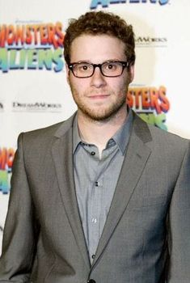
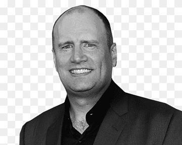

Our Famous Producers
Here are our most famous producers.
Seth Rogen
An actor, comedian and writer, Seth Rogen has come a long way from doing stand-up comedy as a teen. Rogen was born in Vancouver, British Columbia, to Sandy (Belogus), a social worker, and Mark Rogen, who worked for non-profits. His father is American-born and his mother is Canadian. He is of Russian Jewish descent. He attended Vancouver Talmud Torah Elementary School and Point Grey Secondary School (although he dropped out of high school to move to Los Angeles) and was known for the stand-up comedy he performed at Camp Miriam, a Habonim Dror camp. At sixteen, Rogen placed second in the 1998 Vancouver Amateur Comedy Contest. Soon after that he landed his first role in Judd Apatow's short-lived but well regarded TV series Freaks and Geeks (1999), taking on the role of Ken Miller. Though the show only lasted one season, it was the launching pad for many careers, including Rogen, Apatow, James Franco, and Jason Segel. This early work sharpened Rogen's keen improvisational skills, which he's used on many projects since. Following Freaks and Geeks (1999), he participated in a few unsuccessful television projects, and then joined the American television version of Da Ali G Show (2000) as a writer during its second and last season, along with his childhood friend and writing partner Evan Goldberg. The writing team received an Emmy nomination. As a huge fan of the first season, Rogen was thrilled to get the chance to work with Sacha Baron Cohen. Continuing his work with Apatow, he joined the cast of Apatow's debut film The 40-Year-Old Virgin (2005) and is credited as co-producer. After that he took the lead in Knocked Up (2007), Apatow's second movie and a huge success. He's since been a frequent collaborator with Apatow, in projects such as Superbad (2007), Pineapple Express (2008) and Funny People (2009). He co-wrote Superbad (2007), with Goldberg; the pair started the project when they were teens. They won the Canadian Comedy Award for Best Writing in a Film in 2008. They later wrote Pineapple Express (2008) and The Green Hornet (2011), also starring Rogen. A talented voice artist, Rogen is in the animated films Horton Hears a Who! (2008), Kung Fu Panda (2008), and Monsters vs. Aliens (2009), and has voiced characters for The Simpsons (1989) and American Dad! (2005). Rogen was named the Canadian Comedy Person of the Year by the Canadian Comedy Awards in both 2008 and 2009. Rogen lives in Los Angeles with Lauren Miller Rogen, whom he met in 2004. They became engaged in September 2010 and married in October 2011.
Kevin Feige
Kevin Feige (born June 2, 1973) is an American film producer who has been the president of Marvel Studios since 2007. The films he has produced have a combined worldwide box office gross of over $22 billion. Feige is a member of the Producers Guild of America. In 2019, he received his first nomination for the Academy Award for Best Picture for producing Black Panther. Feige was raised in Westfield, New Jersey, where he graduated from Westfield High School. He comes from a Jewish family. His maternal grandfather, Robert E. Short, had been a television producer in the 1950s, having worked on soap operas including The Guiding Light and As the World Turns. Before high school, Feige applied to the University of Southern California School of Cinematic Arts, the alma mater of his favorite directors: George Lucas, Ron Howard and Robert Zemeckis. His first five applications were rejected, but he persevered and was accepted on the sixth. His early work includes being assistant to executive producer Lauren Shuler Donner on Volcano and You've Got Mail. In 2000, he was hired by Marvel as a producer. On the first X-Men film, Donner made Feige an associate producer, due to his knowledge of the Marvel Universe. Impressing Avi Arad, he was hired to work as his second-in-command at Marvel Studios that same year. Feige was named president of production for Marvel Studios in March 2007. Feige received the Motion Picture Showman of the Year award at the ICG Publicists Guild Awards on February 22, 2013. The Awards committee chairman, Henri Bollinger, said "Kevin Feige's understanding and appreciation of publicity and promotion in the role of a movie's success has led to a string of blockbuster feature films adapted from the pages of Marvel comic books during the past 10 years.